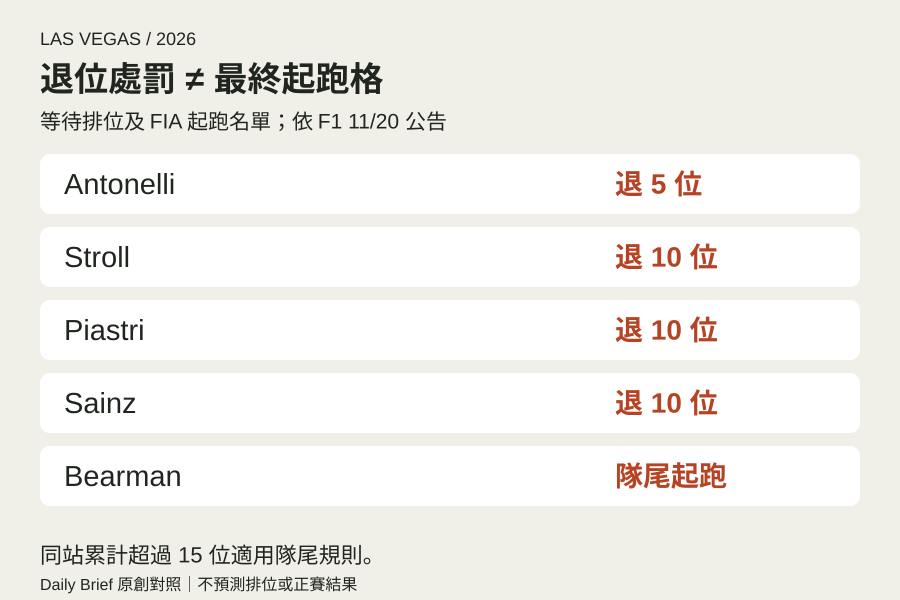

FORMULA 1 / THE ESSENTIALS
Las Vegas 五名車手面臨退位，Bearman 將從隊尾起跑
收錄於 2026-11-21 日報 · Formula 1 官方動力單元處罰整理
已確認的進展
- Formula 1 11 月 20 日確認：Antonelli 第六具內燃機超額，退 5 位；Stroll 的儲能與控制電子組件超額，合計退 10 位；Bearman 多項動力單元超額，將從隊尾起跑。
- 先前已確認 Piastri、Sainz 各退 10 位。Antonelli 同時換上的渦輪及排氣組件仍在配額內，不能把每項換件都算成額外處罰；單站累計超過 15 位者適用隊尾規則。
影響與限制
- 多車處罰將改變排位後的正賽起跑順序，影響比單純練習賽快慢更直接。 排位尚未完成，本期報處罰而非最終格位；仍須等待 FIA 正式起跑名單及任何後續決定。
後續更新：前期僅報 Piastri 內燃機退 10 位；新增 Antonelli、Stroll、Bearman，並整合 Sainz 已確認處罰。

原文與查核
以上為整理與解讀，重要細節請回到原文核對。
- Formula 1 官方動力單元處罰整理 ↗發布 2026-11-20 · 查核 2026-11-21T05:08:17+08:00